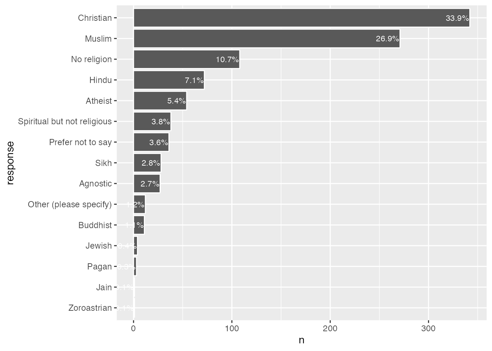

In the last chapter we explored some high level data about religion in the UK. This was a census sample, which usually refers to an attempt to get as comprehensive a sample as possible. But this is actually fairly unusual in practice. Depending on how complex a subject is, and how representative we want our data to be, it’s much more common to use selective sampling, that is survey responses at n=100 or n=1000 at a maximum. The advantage of a census sample is that you can explore how a wide range of other factors - particularly demographics - intersect with your question. And this can be really valuable in the study of religion, particularly as you will see as we go along that responses to some questions are more strongly correlated to things like economic status or educational attainment than they are to religious affiliation. It can be hard to tell if this is the case unless you have enough of a sample to break down into a number of different kinds of subsets. But census samples are complex and expensive to gather, so they’re quite rare in practice.
For this chapter, I’m going to walk you through a data set that a colleague (Charles Ogunbode) and I collected in 2021. Another problem with smaller, more selective samples is that researchers can often undersample minoritised ethnic groups. This is particularly the case with climate change research. Until the time we conducted this research, there had not been a single study investigating the specific experiences of people of colour in relation to climate change in the UK. Past researchers had been content to work with large samples, and assumed that if they had done 1000 surveys and 50 of these were completed by people of colour, they could “tick” the box. But 5% is actually well below levels of representation in the UK generally, and even more sharply the case for specific communities. And if we bear in mind that non-white respondents are (of course!) a highly heterogenous group, we’re even more behind in terms of collecting data that can improve our knowledge. Up until recently researchers just haven’t been paying close enough attention to catch the significant neglect of the empirical field that this represents.
While I’ve framed my comments above in terms of climate change research, it is also the case that, especially in diverse societies like the USA, Canada, the UK etc., paying attention to non-majority groups and people and communities of colour automatically draws in a strongly religious sample. This is highlighted in one recent study done in the UK, the “Black British Voices Report” in which the researchers observed that “84% of respondents described themselves as religious and/or spiritual”. My comments above in terms of controlling for other factors remains important here - these same researchers also note that “despire their significant important to the lives of Black Britons, only 7% of survey respondents reported that their religion was more defining of their identity than their race”.
We’ve decided to open up access to our data and I’m highlighting it in this book because it’s a unique opportunitiy to explore a dataset that emphasises diversity from the start, and by extension, provides some really interesting ways to use data science techniques to explore religion in the UK.
4 Loading in some data
# R Setup -----------------------------------------------------------------setwd("/Users/kidwellj/gits/hacking_religion_textbook/hacking_religion")library(here)
here() starts at /Users/kidwellj/gits/hacking_religion_textbook
library(tidyverse)
-- Attaching core tidyverse packages ------------------------ tidyverse 2.0.0 --
v dplyr 1.1.3 v readr 2.1.4
v forcats 1.0.0 v stringr 1.5.0
v ggplot2 3.4.3 v tibble 3.2.1
v lubridate 1.9.3 v tidyr 1.3.0
v purrr 1.0.2
-- Conflicts ------------------------------------------ tidyverse_conflicts() --
x dplyr::filter() masks stats::filter()
x dplyr::lag() masks stats::lag()
i Use the conflicted package (<http://conflicted.r-lib.org/>) to force all conflicts to become errors
library(haven) # used for importing SPSS .sav fileshere::i_am("chapter_2.qmd")
here() starts at /Users/kidwellj/gits/hacking_religion_textbook/hacking_religion
The first thing to note here is that we’ve drawn in a different type of data file, this time from an .sav file, usully produced by the statistics software package SPSS. This uses a different R Library (I use haven for this). The upside is that in some cases where you have survey data with both a code and a value like “1” is eqivalent to “very much agree” this will preserve both in the R dataframe that is created. Now that you’ve loaded in data, you have a new R dataframe called “climate_experience_data” with a lot of columns with just under 1000 survey responses.
5 How can you ask about religion?
One of the challenges we faced when running this study is how to gather responsible data from surveys regarding religious identity. We’ll dive into this in depth as we do analysis and look at some of the agreements and conflicts in terms of respondent attribution. Just to set the stage, we used the following kinds of question to ask about religion and spirituality:
Question 56 asks respondents simply, “What is your religion?” and then provides a range of possible answers. We included follow-up questions regarding denomination for respondents who indicated they were “Christian” or “Muslim”. For respondents who ticked “Christian” we asked, “What is your denomination?” nad for respondents who ticked “Muslim” we asked “Which of the following would you identify with?” and then left a range of possible options which could be ticked such as “Sunni,” “Shia,” “Sufi” etc.
This is one way of measuring religion, that is, to ask a person if they consider themselves formally affiliated with a particular group. This kind of question has some (serious) limitations, but we’ll get to that in a moment.
We also asked respondents (Q57): “Regardless of whether you belong to a particular religion, how religious would you say you are?” and then provided a slider from 0 (not religious at all) to 10 (very religious).
We included some classic indicators about how often respondents go to worship (Q58): Apart from weddings, funerals and other special occasions, how often do you attend religious services? and (Q59): “Q59 Apart from when you are at religious services, how often do you pray?”
More than once a week (1)
Once a week (2)
At least once a month (3)
Only on special holy days (4)
Never (5)
Each of these measures a particular kind of dimension, and it is interesting to note that sometimes there are stronger correlations between how often a person attends worship services (weekly versus once a year) and a particular view, than there is between their affiliation (if they are Christian or Pagan). We’ll do some exploratory work shortly to see how this is the case in our sample. We also included a series of questions about spirituality in Q52 and used a nature relatedness scale Q51.
You’ll find that many surveys will only use one of these forms of question and ignore the rest. I think this is a really bad idea as religious belonging, identity, and spirituality are far too complex to work off a single form of response. We can also test out how these different attributions relate to other demographic features, like interest in politics, economic attainment, etc.
So who’s religious?
As I’ve already hinted in the previous chapter, measuring religiosity is complicated. I suspect some readers may be wondering something like, “what’s the right question to ask?” here. Do we get the most accurate representation by asking people to self-report their religious affiliation? Or is it more accurate to ask individuals to report on how religious they are? Is it, perhaps, better to assume that the indirect query about practice, e.g. how frequently one attends services at a place of worship may be the most reliable proxy?
Highlight challenges of various approaches pointing to literature.
Let’s dive into the data and see how this all works out. We’ll start with the question 56 data, around religious affiliation:
There are few things we need to do here to get the data into initial proper shape. This might be called “cleaning” the data:
Because we imported this data from an SPSS .sav file format using the R haven() library, we need to start by adapting the data into a format that our visualation engine ggplot can handle (a dataframe).
Next we’ll rename the columns so these names are a bit more useful.
We need to omit non-responses so these don’t mess with the counting (these are NA in R)
If we pause at this point to view the data, you’ll see it’s basically just a long list of survey responses. What we need is a count of each unique response (or factor). This will take a few more steps:
First we generate new a dataframe with sums per category and
2
…sort in descending order
3
Then we add new column with percentages based on the sums you’ve just generated
That should give us a tidy table of results, which you can see if you view the contents of our new religious_affiliation_sums dataframe:
head(religious_affiliation_sums)
# A tibble: 6 x 3
response n perc
<fct> <int> <chr>
1 Christian 342 "33.9%"
2 Muslim 271 "26.9%"
3 No religion 108 "10.7%"
4 Hindu 72 " 7.1%"
5 Atheist 54 " 5.4%"
6 Spiritual but not religious 38 " 3.8%"
# make plotggplot(religious_affiliation_sums, aes(x = n, y = response)) +geom_col(colour ="white") +## add percentage labelsgeom_text(aes(label = perc),## make labels left-aligned and whitehjust =1, nudge_x =-.5, colour ="white", size=3)

I’ve added one feature to our chart that wasn’t in the bar charts in chapter 1, text labels with the actual value on each bar.
You may be thinking about the plots we’ve just finished in chapter 1 and wondering how they compare. Let’s use the same facet approach that we’ve just used to render this data in a subsetted way.
# First we need to add in data on ethnic self-identification from our respondents:df <-select(climate_experience_data, Q56, Q0)religious_affiliation_ethnicity <-as_tibble(as_factor(df))names(religious_affiliation_ethnicity) <-c("Religion", "Ethnicity")religious_affiliation_ethnicity_sums <- religious_affiliation_ethnicity %>%group_by(Ethnicity) %>% dplyr::count(Religion, sort =TRUE) %>% dplyr::mutate(Religion = forcats::fct_rev(forcats::fct_inorder(Religion)))plot1 <-ggplot(religious_affiliation_ethnicity_sums, aes(x = n, y = Religion)) +geom_col(colour ="white") +facet_wrap(~Ethnicity, scales="free_x")ggsave("chart.png", plot=plot1, width =8, height =10, units=c("in"))
Use mutate to put “prefer not to say” at the bottom # Info here: https://r4ds.had.co.nz/factors.html#modifying-factor-levels
6 Q56 follow-ups
caption <- “Christian Denomination” # TODO: copy plot above for Q56 to add two additional plots using climate_experience_data_named\(Q56b and climate_experience_data_named\)Q56c # Religious Affiliation b - Christian Denomination Subquestion christian_denomination <- qualtrics_process_single_multiple_choice(climate_experience_data_named\(Q56b) christian_denomination_table <- chart_single_result_flextable(climate_experience_data_named\)Q56b, desc(Count)) christian_denomination_table save_as_docx(christian_denomination_table, path = “./figures/q56_religious_affiliation_xn_denomination.docx”)
7 Religious Affiliation c - Muslim Denomination Subquestion
caption <- “Islamic Identity” # Should the label be different than income since the data examined is the Affiliation? # TODO: adjust plot to factor using numbered responses on this question (perhaps also above) religious_affiliationc <- qualtrics_process_single_multiple_choice(climate_experience_data_named\(Q56c) religious_affiliationc_plot <- plot_horizontal_bar(religious_affiliationc) religious_affiliationc_plot <- religious_affiliationc_plot + labs(caption = caption, x = "", y = "") religious_affiliationc_plot ggsave("figures/q56c_religious_affiliation.png", width = 20, height = 10, units = "cm") religious_affiliationc_table <- chart_single_result_flextable(climate_experience_data_named\)Q56c, Count) religious_affiliationc_table save_as_docx(religious_affiliationc_table, path = “./figures/q56_religious_affiliation_islam.docx”)
level_order <- c(“Don<80><99>t know”, “Definitely not changing”, “Probably not changing”, “Probably changing”, “Definitely changing”) ## code if a specific palette is needed for matching fill = wheel(ochre, num = as.integer(count(q6_data[1]))) # make plot q6_data_plot <- ggplot(q6_data, aes(x = n, y = response, fill = fill)) + geom_col(colour = “white”) + ## add percentage labels geom_text(aes(label = perc), ## make labels left-aligned and white hjust = 1, colour = “black”, size=4) + # use nudge_x = 30, to shift position ## reduce spacing between labels and bars scale_fill_identity(guide = “none”) + ## get rid of all elements except y axis labels + adjust plot margin theme_ipsum_rc() + theme(plot.margin = margin(rep(15, 4))) + easy_center_title() + # with thanks for helpful info on doing wrap here: https://stackoverflow.com/questions/21878974/wrap-long-axis-labels-via-labeller-label-wrap-in-ggplot2 scale_y_discrete(labels = wrap_format(30), limits = level_order) + theme(plot.title = element_text(size =18, hjust = 0.5), axis.text.y = element_text(size =16)) + labs(title = title, x = ““, y =”“)
q6_data_plot
ggsave(“figures/q6.png”, width = 18, height = 12, units = “cm”)
16 Subsetting
16.1 Q57 subsetting based on Religiosity ————————————————————–